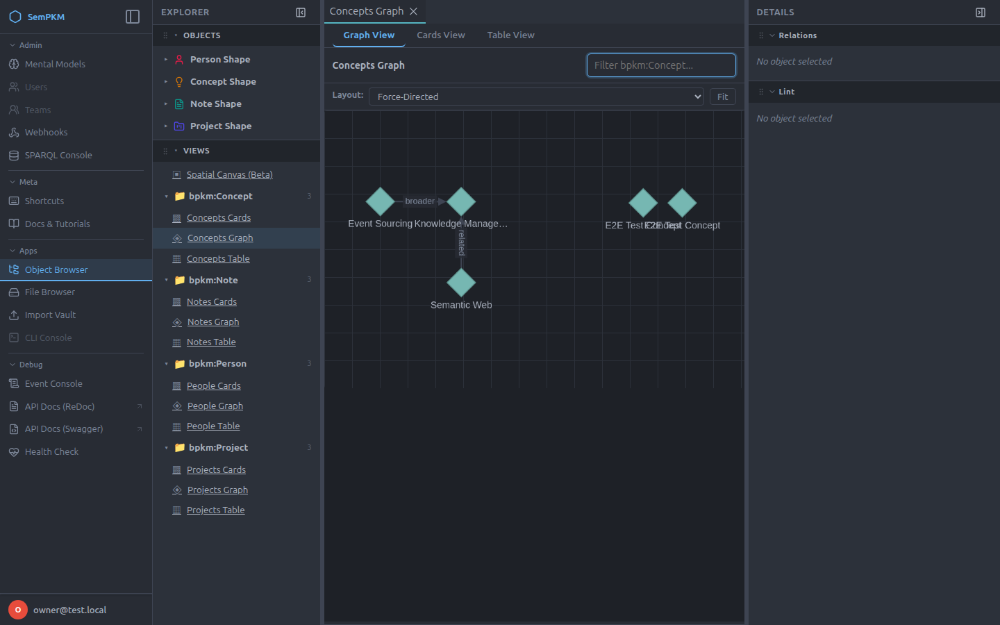
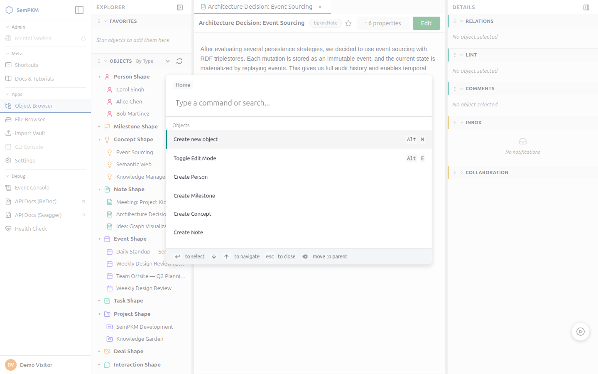

Build knowledge that doesn't decay
Your notes become structured, queryable, and future-proof — and you own every byte. Import your Obsidian vault or start fresh with a Mental Model.
Self-hosted · Open source · Powered by open standards

Your notes become structured, queryable, and future-proof — and you own every byte. Import your Obsidian vault or start fresh with a Mental Model.
Self-hosted · Open source · Powered by open standards
SemPKM meets you where you are. Pick the path that matches your experience.
You love your vault but your Dataview queries keep breaking.
You love databases and views but hate the lock-in and performance cliffs.
No baggage. Pick a Mental Model and start building structured knowledge now.
Most tools force you to choose between flexibility and structure. SemPKM gives you both — plus things no other tool offers.
| Capability | SemPKM | Obsidian | Notion | Tana | Capacities |
|---|---|---|---|---|---|
| Structure enforcement | Strong — schema-enforced | Weak — informal YAML | Soft — optional properties | Medium — supertags | Medium — object types |
| Data ownership | Strong — self-hosted | Strong — local files | Weak — cloud-only | Weak — cloud-only | Weak — cloud-only |
| Typed relationships | Strong — typed, annotatable edges | Weak — untyped links | Weak — flat relations | Medium — tag-based | Medium — object links |
| Queryable views | Strong — reliable structured queries | Fragile — Dataview plugin | Medium — database views | Medium — search nodes | Weak — basic filters |
| Full history & undo | Full — every change tracked | None | None | None | None |
| Plugin ecosystem | Growing — app platform, 12 first-party apps | Strong — 1000+ plugins | Medium — integrations | Weak — limited | Weak — limited |
Think of Mental Models as domain kits — pre-built bundles of types, forms, views, and validation. Pick one that fits your workflow — or combine several. No blank-page syndrome, no manual setup.
7 types — Notes, Projects, Tasks, Events, Milestones, Concepts, People
A general-purpose starter for personal knowledge management. Organize your notes, track projects, and link everything together.
4 types — Contacts, Companies, Interactions, Deals
Track relationships, log meetings, and manage opportunities. Every interaction is linked to the people and companies involved.
5 types — Fleeting → Literature → Permanent → Structure notes
The Zettelkasten method, enforced. Notes progress through stages with provenance chains and automatic relationship discovery.
5 types — Papers, Claims, Evidence, Arguments, Research Questions
For academics and researchers. Track claims with supporting evidence, spot unsupported arguments, and build reproducible knowledge.
30+ types — OKRs, Business Model Canvas, decision & strategy matrices
Plan strategy with structured frameworks: objectives and key results, canvases, and scoring matrices — each with its own dedicated view.
12 types — Pillars, Value Goals, Projects, Reviews
The PPV productivity method. Align projects to life pillars and value goals, then track weekly through yearly reviews with pillar scoring.
A focused feature set designed for people who take their knowledge seriously.
Every link has a type, direction, and provenance. Not just "linked from" — but how and why things connect.

See your knowledge as a navigable graph. Multiple layouts, type-based styling, and labeled edges.

Drag objects onto an infinite surface. Arrange ideas visually, flip between detail and layout, think in two dimensions.
Press Ctrl+K to navigate, search, and trigger actions. Keyboard-driven workflow for power users.

Every change is an immutable event. See who changed what, when, and why. Undo anything, any time.
Define your types — SemPKM generates forms with validation, hints, and constraints automatically.

Mount your knowledge graph via WebDAV. Browse and edit alongside your vault — Markdown files, typed frontmatter, all synced.
Build custom dashboards with tables, charts, and cards. Create multi-step workflows with guided progress tracking.
Ask questions in plain language — the Copilot writes and runs the queries. Bring your own OpenAI-compatible LLM endpoint.
First-party sync apps for Linear, GitHub, Jira, Monday, Asana, and Todoist — plus Google, Outlook, and CalDAV calendars.
Share graphs across SemPKM instances. Invite collaborators by handle, sync changes with full attribution — everyone keeps their own server.
Lucene-powered keyword search across every property and body text, with fuzzy matching. Find anything, however you phrased it.
Powered by open standards (RDF, SHACL, SPARQL) — your data is never locked in.
Your SemPKM instance is home base: agents work inside it, your phone feeds it real-world context, and federation connects it to instances owned by people you trust.
Context reporting is covered in Chapter 48: Mobile App & Context, sharing between instances in Chapter 51: Federation.
The near-term focus: putting your knowledge graph to work for you.
A new Mental Model for autonomous agents
Create, view, and monitor live running agents that work for you and your goals — 24/7, inside SemPKM. Because it ships as a Mental Model, agents live in your knowledge graph like everything else: typed, linked to the goals they serve, and visible in your views.
Want to shape what comes next? Open an issue on GitHub.
Explore the live demo, self-host with a single Docker command, or read the guide.